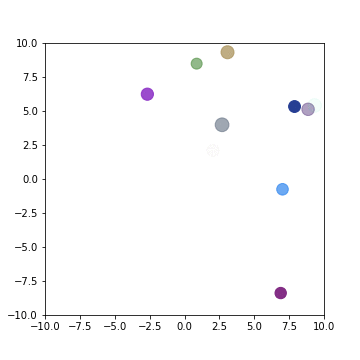
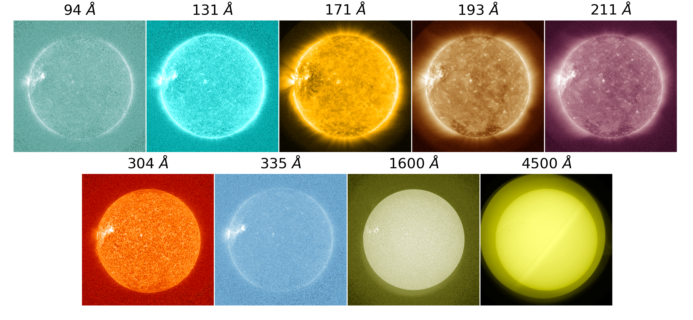
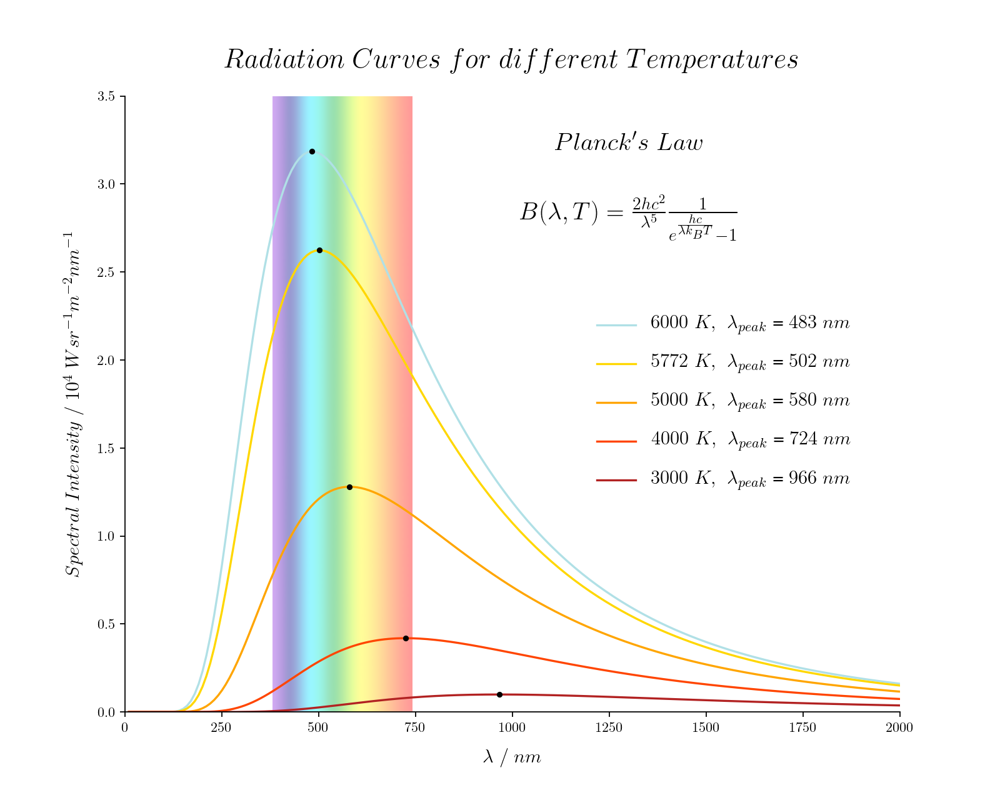
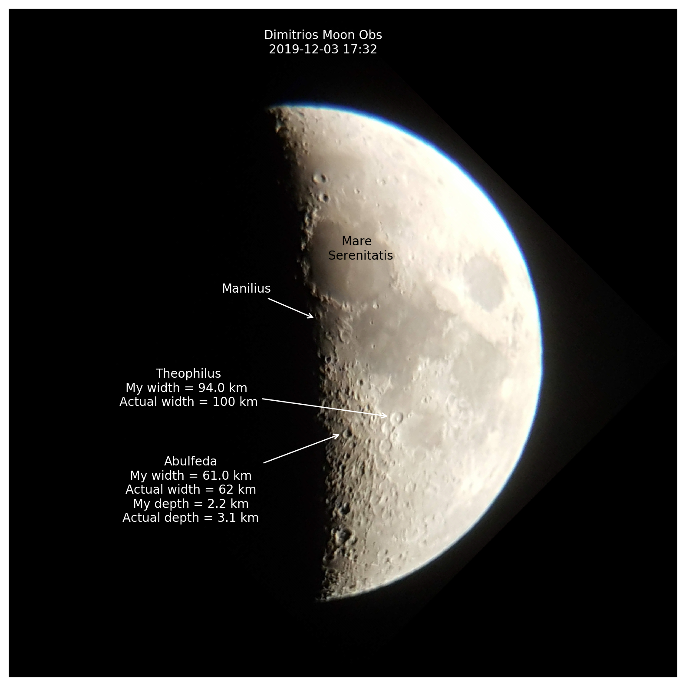
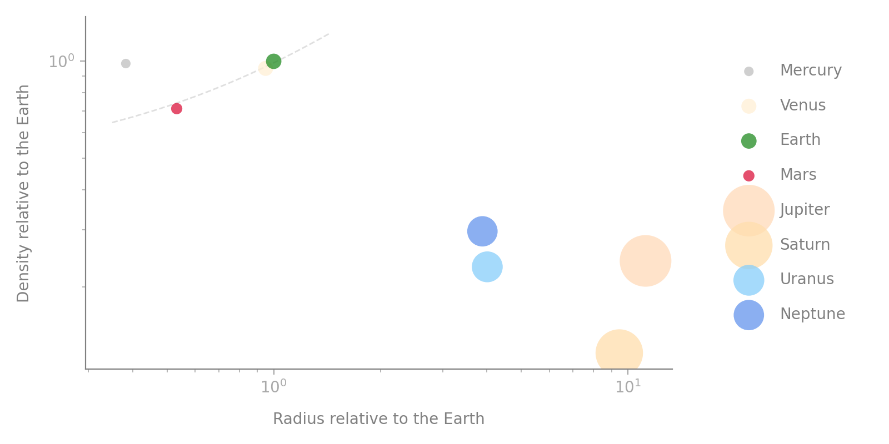
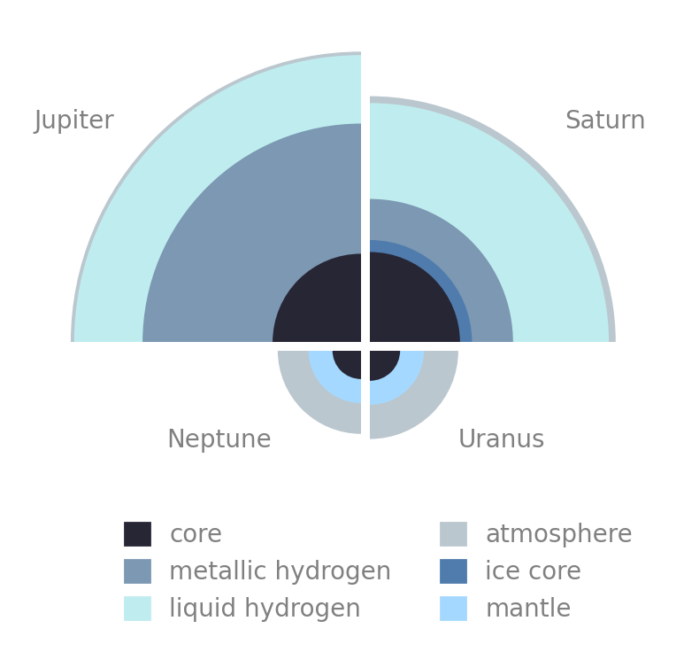
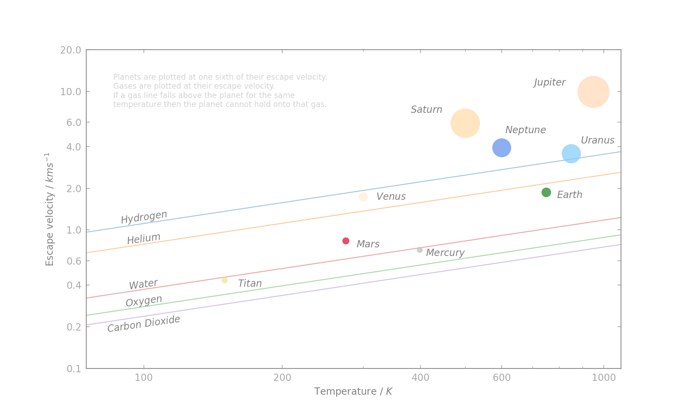
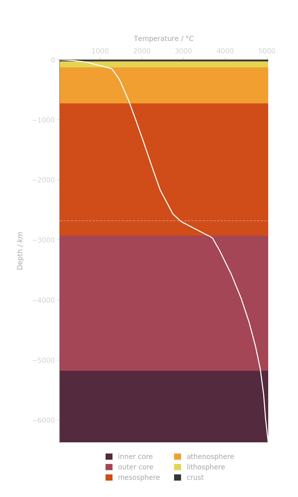
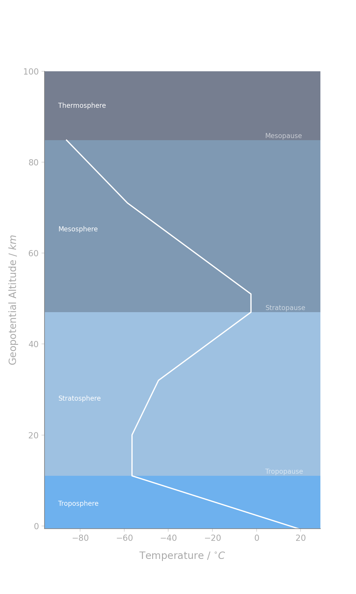

Coding Activities
My GitHub repository Astronomy has python activities on various topics in astronomy. They are in the form of interactive notebooks which can be accessed and run online. They are intended to take 1-2 hours.
Each code has a teacher version with all outputs and completed code. These have the suffix Teacher. The student file is much smaller as it is missing the outputs and has code completition tasks for the students to complete.
At the start of the code is the Aim of the activity along with a Predict section which encourages the students to think about the topic before starting the activity.
The goal of the coding activities are to process and visualise data, and to extract physical insights from them (as described in the AAPT report below). However by performing the activities students will inevitably also learn debugging, how to convert theory/models into code, and how to present data formally in a document or presentation.
The outputs (images, movies etc) were designed to be a starting point for my students to put their own data and visualisations in their reports and presentations. My hope is this will promote a deeper understanding of the topic and better engage the students, encouraging ownership and pride in their work.
Inspiration from:
Adam LaMee, Scientific Computing Resources, Url: adamlamee.github.io/CODINGinK12/
Brown & Wilson, Ten quick tips for teaching programming, PlosCompBiol, Url: doi.org/10.1371/journal.pcbi.1006023
American Association of Physics Teachers (AAPT), Computational Physics Report, Url: aapt.org/Resources/upload/AAPT_UCTF_CompPhysReport_final_B.pdf
PICUP, Integrating computing into physics, Url: compadre.org/PICUP/webdocs/About.cfm
astronomycenter Resources, Url: compadre.org/astronomy/index.cfm
Running the Code
You can run the code using my Binder build! Click on the three rings next to Code at the top of the page.
Otherwise you can send individual notebooks (with the required files) to students and they can upload them to jupyter.org/try. If you have your own JupyterHub setup clone the repository and do as you will!
Pair coding - some activities are more suited to pair coding such as AstPy-1 and AstPy-2.
NOTES: If I forget to rebuild the Binder image after a push to the repository it will take a while to rebuild (5-10 mins). The .py files have not been tested in an interactive environment and are not updated even if the Notebook code is.
Inside the activity directory
Each activity directory should contain:
- .ipynb - An interactive python notebook
- Teacher.ipynb - An interactive python notebook with solutions
- .py - A file used for testing or to create more complex figures
- Any input files required to run the code
- Any output files and images the code produces
Data Files
There is a Data directory alongside the activity directories which contains all the data files for all activities. For descriptions of all the data files available go to Resources in the navigation bar then Data.
Activities List
These are just brief summaries of each activity. Visit the activity directory on GitHub for the aim and prediction questions, all the inputs/data, and output images/files.
Click on one of the contents links below to jump to the activity.
AstPy-1 Intro to Python and Numpy
A simple introduction to Python and using Numpy.
AstPy-2 Challenge: Bouncing Balls
Applying Astpy-1 skills to plotting with Matplotlib. You can make and improve on a simulation of bouncing balls.

AstPy-3 Stellar Fusion
Introduces the atomic mass unit. Students calculate nuclear binding energies, mass defects, and mass exesses. Contains nuclear data (masses and binding energies) from the Atomic Mass Data Center.

AstPy-4 Solar Images
Students use the SunPy module to explore the sun in different wavelengths and can download an image of the sun taken on today's date. Both SDO and SOHO images are explored as well as the sunspot cycle and flares. Some SDO HMI and AIA FITS files are provided.

AstPy-5 Solar Radiation
Students are introduced to the blackbody curve, Wien's law, and the effective temperature of planets.

AstPy-6 Sunspots
Students track sunspots across the face of the sun and use that information to calculate the siderial and synodic rotation rate of the sun. There is also code here that attempts to automatically detect and track sunspots.

AstPy-7 Lunar Surface
Students upload an image of the moon they took and then annotate it. From the image they calculate sizes and depths of craters using the SkyField package. Requires students to calcualte the resolution of their telescope (or camera). They can then compare their image to known data and the included Lunar Reconnaissance Orbiter (LRO) and Lunar Orbiter Laser Altimeter (LOLA) data.

AstPy-8 Planets
Students compare data from the NASA planetary factsheet such as mass and radius and try and identify trends/groupings. The end of the assignment introduces students to exoplanet detection and observational biases.

AstPy-9 Planetary Interiors
Students compare data on the interior compositions of the planets. They learn about compositional and mechanical layers and visualise the chemical composition of the Earth's crust.

AstPy-10 Planetary Atmospheres
Students compare data on the chemical composition of planetary atmospheres. They can also calculate the escape velocity of some gases and work out whether those gases can escape from the planets atmosphere.

AstPy-11 Earth's Heat
Students model the geothermal gradient of the lithospehre and then plot the geotherm for the whole Earth. Students also calculate the energy transfer via conduction and latent heat.

AstPy-12 Earth's Atmosphere
Students visulaise how the temperature, pressure, density, and speed of sound vary with geopotential altitude using the International Standard Atmosphere model. Temperatures are constructed from data but all other properties are calculated using the ideal gas law etc.

Contact - astrodimitrios(at)gmail.com
Copyright Dimitrios Theodorakis © 2020 · GNU GPL 3.0